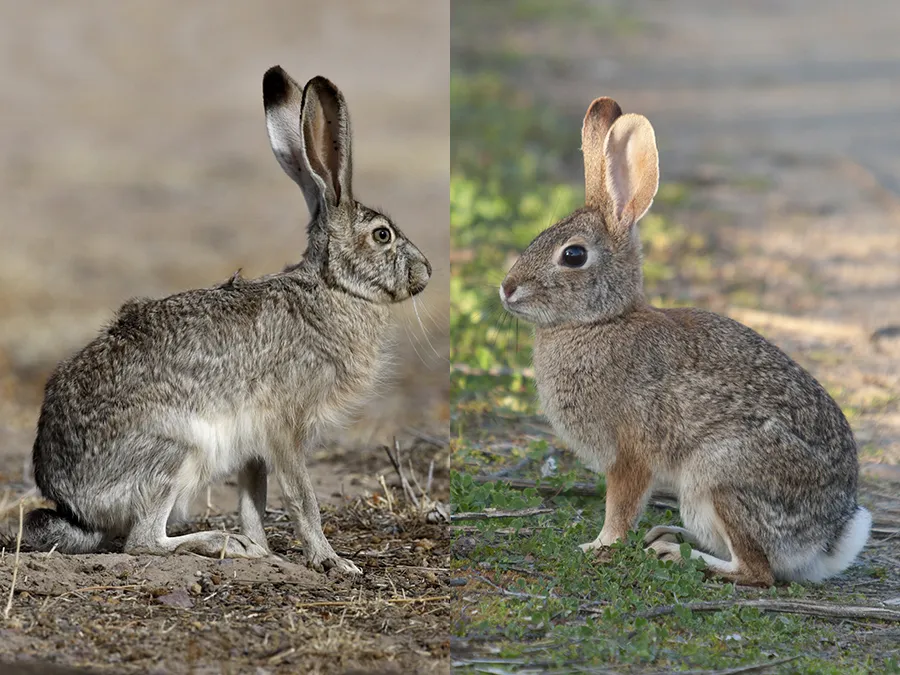

Bunny Heaven
Bunny Heaven
Rabbit vs Bunny
Rabbit vs. Bunny: Exploring the Differences and Similarities
The terms "rabbit" and "bunny" are often used interchangeably in everyday language, leading many to believe they refer to entirely different animals. However, both words actually describe the same species of animal, with differences primarily rooted in context, connotation, and usage. To better understand these distinctions, it is essential to explore the biological, linguistic, and cultural aspects of these terms.
Biological Perspective
From a biological standpoint, there is no difference between a "rabbit"
and a "bunny." Both terms refer to small mammals belonging to the family
Leporidae. Within this family, the most common species is the European
rabbit (Oryctolagus cuniculus), although there are many others,
including various types of hares. Rabbits are characterized by their
long ears, large hind legs, and short tails. They are herbivorous
animals, feeding mainly on grasses, leaves, and other vegetation.
The life cycle, physical characteristics, and behavior of rabbits are
consistent regardless of whether they are called rabbits or bunnies. For
instance, both terms can be applied to baby rabbits, although "bunny" is
more commonly used in this context. Baby rabbits, or kits, are born
blind and helpless, gradually growing into the agile and alert creatures
we commonly see.
Linguistic and Contextual Usage
The distinction between "rabbit" and "bunny" arises more from linguistic
and contextual differences than from any scientific basis. The term
"rabbit" is the standard and more formal term used in zoology,
veterinary science, and general discourse. It is appropriate in most
contexts, especially when discussing the animal in a more serious or
scientific manner.
On the other hand, "bunny" is an informal, affectionate term typically
used to describe rabbits in a more playful or endearing way. The word
"bunny" is often associated with children's language, stories, and
cartoons. For example, the Easter Bunny, a popular cultural figure, is a
symbol of spring and renewal, depicted as a friendly, gift-giving
rabbit.
The word "bunny" tends to evoke a sense of innocence and cuteness, which
is why it is commonly used when referring to young rabbits or when
emphasizing the softer, more endearing qualities of these animals. The
term is also prevalent in popular culture, where characters like Bugs
Bunny have further ingrained the word into the public consciousness as a
symbol of charm and mischief.
Cultural Significance
The cultural significance of rabbits and bunnies extends into various
traditions, myths, and media. In many cultures, rabbits are symbols of
fertility and renewal, due in part to their prolific breeding habits.
This symbolism is evident in the association of the Easter Bunny with
the Christian holiday of Easter, which celebrates rebirth and new
beginnings.
In literature and folklore, rabbits often appear as cunning, clever, or
even trickster characters, as seen in tales like Br'er Rabbit. In
contrast, the term "bunny" often connotes a gentler, more innocent
character, as exemplified by Peter Rabbit in Beatrix Potter's beloved
children's books.
Moreover, the distinction between "rabbit" and "bunny" also plays out in
the pet industry. While both terms are used, "bunny" is more likely to
be employed by pet owners and marketers to emphasize the pet's cuteness
and appeal, making it a popular choice for children's toys, books, and
media.
Conclusion
In summary, while the terms "rabbit" and "bunny" refer to the same animal, they carry different connotations and are used in different contexts. "Rabbit" is the more formal, scientifically accurate term, while "bunny" is an informal, affectionate word often used in playful or endearing contexts. Understanding the nuances between these terms enriches our appreciation of the language we use and the cultural meanings we attach to the animals that inhabit our world. Whether you prefer to call it a rabbit or a bunny, this small, adorable creature continues to capture our imagination and affection in various ways.